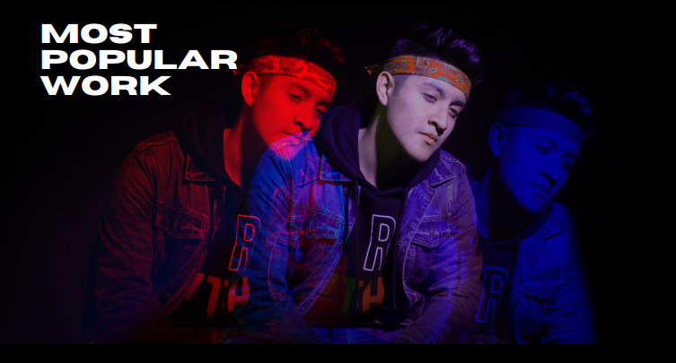

Carlos Medina, mejor conocido como loveusainz; es un joven de 22 años mexicano, apasionado por la música y la creación como tal de este maravilloso arte. Se ha desempeñado como DJ profesional en géneros como el UK Garage y Reggaetón. Forma parte del equipo de trabajo de artistas como Chemy666 y Knox, como productor musical principal de estos, haciendo géneros como RnB, Jersey Club y Afrobeat.

“Particle“ es el sonido mismo de loveusainz, en cuanto a sus producciones. Es un viaje a la interpretación del artista con su propio universo, desde cosas detalladas hasta cosas mas minimalistas.